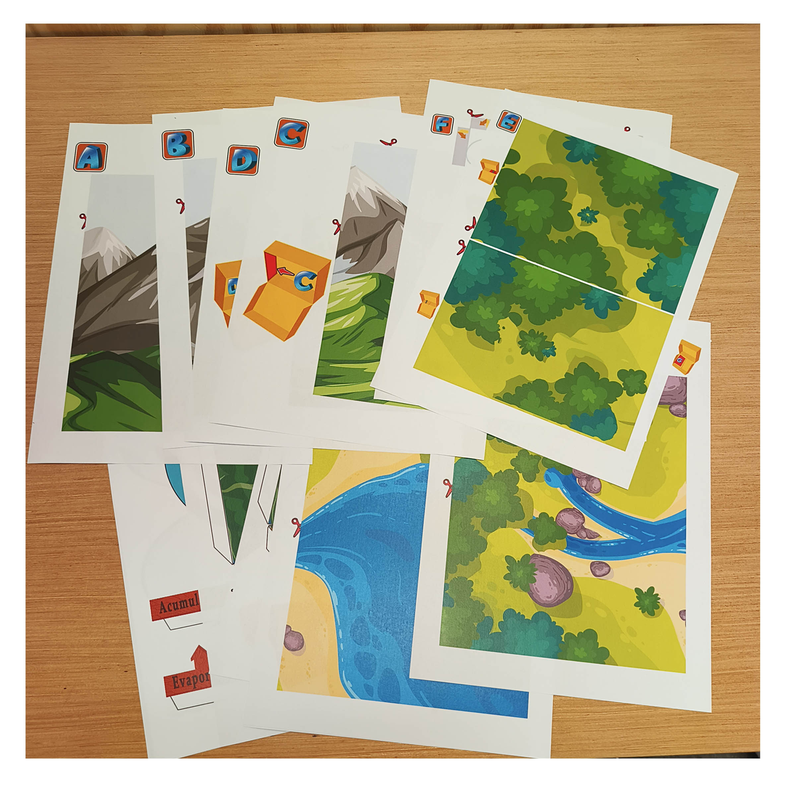

Paso 1
Imprime el PDF y reconoce las piezas
Empieza con las hojas del PDF impresas. Puedes utilizar papel normal de impresora, como el que usas en casa o en la oficina. Antes de recortar, dedica un momento a mirar las instrucciones: los pequeños dibujos de la caja, las letras y las flechas rojas indican dónde va cada pieza.
Un pequeño consejo: Mantén las hojas a mano mientras construyes. Te ayudarán a identificar las piezas incluso cuando ya hayas separado algunas.
